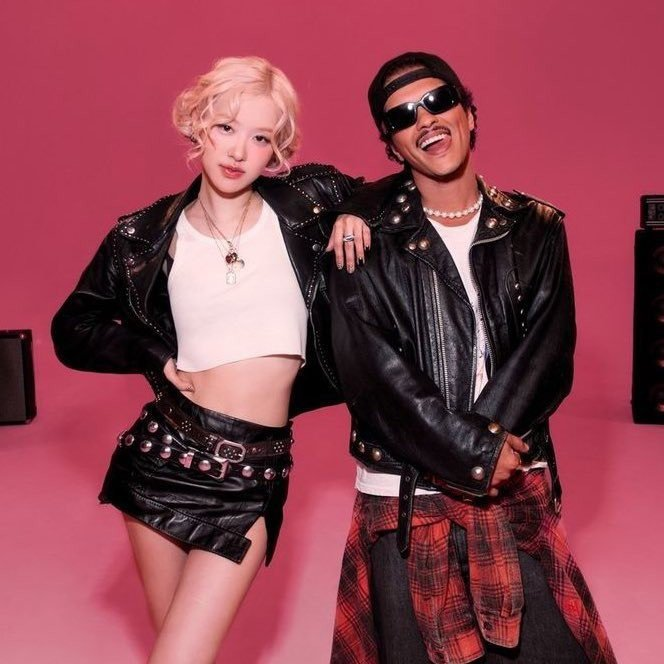

Rosé (BlackPink) vượt mặt Lisa và Jennie
Lisa, Jennie và Rosé đều gia nhập cuộc đua âm nhạc năm 2024 với tư cách nghệ sĩ solo. Trong khi hai
người trước quảng bá rầm rộ cho sự trở lại, Rosé kín tiếng hơn nhưng lại mang đến cú nổ lớn, phá vỡ
mọi kỷ lục mà tất cả thành viên BlackPink lập ra trước đó.
Thành tích ấn tượng
Ngày 18/10, Rosé phát hành đĩa đơn APT, hợp tác với Bruno Mars. Chỉ trong thời gian ngắn ngủi, ca khúc
này nhanh chóng trở thành hit lớn, càn quét mọi bảng xếp hạng toàn cầu và thiết lập vô số kỷ lục ấn
tượng.
Sáng 21/10, AllKpop đưa tin APT đạt hơn 6,85 triệu lượt phát trực tuyến khi ra mắt, xếp vị trí thứ 3
trên bảng xếp hạng toàn cầu của Spotify. Với con số này, giọng ca chính của BlackPink định vị mình là
bài hát mới được nghe nhiều nhất và là người mới duy nhất lọt vào top 10 trong tuần.
Nữ thần tượng sinh năm 1997 cũng giành được danh hiệu “màn ra mắt lớn nhất của một nghệ sĩ solo Kpop nữ
trên Spotify” từ New Woman của Lisa.
Rosé xác lập loạt kỷ lục trên Spotify, vượt qua Lisa và Jennie.
APT đồng thời giúp Bruno Mars đạt được danh hiệu là màn ra mắt lớn nhất trên nền tảng nhạc số trong sự
nghiệp của mình, sau khi vượt qua bản hit khác trong năm của anh, Die With A Smile (kết hợp với Lady
Gaga), với con số 4,8 triệu lượt phát trực tuyến.
Kỷ lục không dừng lại ở đó khi vào ngày thứ 2 phát hành, APT tiếp tục tăng vọt, đạt hơn 10,18 triệu lượt
phát trực tuyến và đang giữ vị trí số 2 trên bảng xếp hạng toàn cầu của Spotify, chỉ sau Die With A
Smile (10,32 triệu).
Với thành tích mới này, Rosé cùng với Jennie trở thành nghệ sĩ solo Kpop nữ duy nhất đạt vị trí số 2
trên bảng xếp hạng toàn cầu của Spotify - thành tích mà bất kỳ nữ ca sĩ Hàn Quốc nào cũng mơ ước.
Không chỉ vậy, Rosé là nghệ sĩ châu Á đầu tiên đạt được hơn 10 triệu lượt phát trực tuyến trong một
ngày. Cô đồng thời phá kỷ lục của Pink Venom (BlackPink) giữ trước đó là ngày phát trực tuyến lớn nhất
cho một bài hát của nghệ sĩ Kpop nữ trong lịch sử Spotify.
Hơn thế, Hàn Quốc và Thái Lan phải ăn mừng khi lần đầu tiên 3 nữ nghệ sĩ solo Kpop cùng lúc lọt vào top
15 bảng xếp hạng toàn cầu Spotify và tất cả đều đến từ BlackPink.
APT của Rosé đứng thứ 2 với 10,18 triệu lượt phát trực tuyến, Mantra của Jennie đứng thứ 11 với 3,95
triệu và Moon Floor của Lisa xếp hạng 15 với 3,74 triệu.

Rosé giúp Bruno phá kỷ lục của chính mình tạo ra trước đó với Lady Gaga.
Người nghe nhạc Hàn Quốc không giấu nổi sự ngạc nhiên và phấn khích trước quá nhiều kỷ lục mà APT đạt
được.
Trên các diễn đàn trực tuyến, mọi người thảo luận sôi nổi về chủ đề này: “Thật ấn tượng. Tôi thích bài
hát này”, “Đây chắc chắn là bài hát hay nhất của một nghệ sĩ châu Á được phát hành trong năm nay, vượt
qua các thành viên khác của BlackPink và BTS”, “Bài hát này là một hit lớn”, “Chúng ta hãy giành vị trí
số 1 nào”, “Thật không thể tin được Rosé, Lisa và Jennie lại thành công đến vậy”, “Kể từ khi rời YG
Entertainment, các cô gái rất tích cực trong âm nhạc và điều đáng kinh ngạc là họ đang làm tốt trên các
bảng xếp hạng. Chắc chắn là một năm tuyệt vời cho Blinks”…
Về mặt con số, thành công của Rosé là không thể chối bỏ. Trên YouTube, MV APT thu về hơn 66,5 triệu lượt
xem chỉ sau 2 ngày lên sóng, bỏ xa Mantra của Jennie (hơn 49 triệu lượt xem tính đến sáng 21/10) dù phát
hành sau một tuần.
iều đáng nói là Rosé không hề quảng bá rầm rộ cho "đứa con tinh thần" của mình trước khi ra mắt. Chỉ hơn
một ngày trước khi đăng tải lên YouTube, khán giả mới biết về màn hợp tác giữa người đẹp sinh năm 1997
và biểu tượng nhạc pop gốc Hawaii.
Tối 16/10, Rosé đăng lên Instagram bức ảnh chụp cùng Bruno kèm dòng chú thích: "Đêm mà tôi dạy Bruno
cách chơi trò uống rượu của Hàn Quốc".
Ở phần bình luận, nam ca sĩ sinh năm 1985 đáp lại: "Rất nhiều niềm vui! Em có nhớ khi em cố gắng hôn tôi
không? Điều đó thật kỳ lạ, khác với bức ảnh đó". Ngay sau đó, Rosé vừa đáp lại lời trêu chọc, vừa ẩn ý
về sản phẩm âm nhạc mới của cả hai: "Em sẽ giết anh. Rút lại lời đó hoặc em sẽ không phát hành bài hát,
Bruno".
Màn tương tác này lập tức khơi dậy sự tò mò từ khán giả, với vô số câu hỏi được đặt ra bên dưới bài
đăng. Không để người hâm mộ chờ lâu, The Black Label lúc này mới đăng thông báo chính thức lên Twitter
về đĩa đơn ATP. Hơn một ngày sau, ca khúc lên kệ.